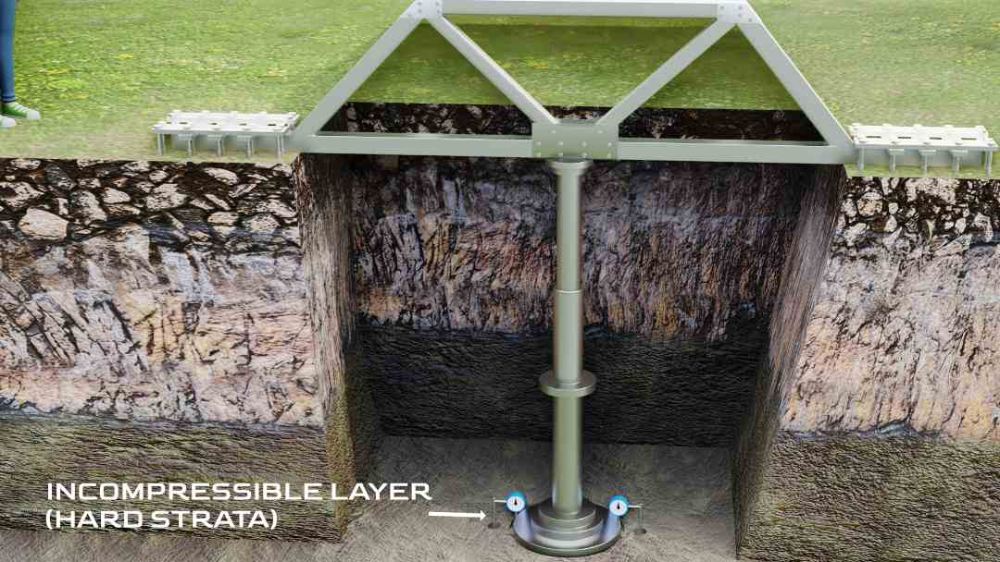

Be it Burj Khalifa, the pentagon or your house, the weight of these structures is ultimately borne by a structural element called footing. A design mistake in the footing can result in the collapse of the whole building, which is why a proper foundation design is crucial. In this article I will explain you the importance of footings and its different types.
Footings are the most important part of the foundation. Their job is to distribute the heavy load of the building, concentrated on the columns, to the wider surface area of soil to achieve structural stability.
Things to consider while designing a footing
In my opinion, before understanding the types of footing, first we have to understand some design aspects of footing.
1. Soil
More specifically, engineers should analyse whether or not the soil at a particular location is capable of bearing a calculated amount of load. If the soil is compressible under loading, excavation is done until and unless you find the incompressible layer which can stand the loading. This layer of soil, in the physics of civil engineering, is called hard strata as shown in fig 1. On this hard strata we can add columns to transfer the load and cover the pit with soil.
2. The area
More the weight of the building, the wider the footing should be. As a result of frictional resistance between the footing and the soil, if this structure is subjected to lateral forces like winds, floods, etc. Footings will help your building avoid sliding (refer fig 2).
3. Thickness
The footing has to withstand pressure applied by the soil as well. If the footing’s thickness is inadequate, the footing on either side of the column will bend due to the soil applying uplift pressure on it. This effect is called ‘Applied bending moment’. You can see this effect in this FEA result here (refer fig 3a).
To prevent this result, the thickness of the plate is increased (refer fig 3b).
Different types of footing
1. Pad or isolated footing
With this process, the soil should be able to bear the entire structural load quite easily. However, this concentrated load on the columns will cause excessive stress in the soil due to lesser contact area. What do you think will happen if this stress exceeds the soil's bearing capacity? it will undergo the punching effect, which leads to imbalance in your structure and eventually cracks or even failure of the whole building. To avoid these failures, you can increase the contact area between the soil and columns. This increased contact area reduces the stress on the soil, and the building stands strong (refer fig 4). This type of pad, or isolated footing, is employed to support lightweight houses that rest on soil with medium strength.
2. Trapezoidal footing
The Isolated footing design can be further optimised economically. If you observe the pressure applied from the soil, it is uniform. However, applied bending moment increases, as you come to the centre zone of the footing. Thus, the need for footing thickness in the centre is greater than at the edges. Therefore, a Trapezoidal footing shape has been adopted in modern structures for isolated footings (refer fig 5).
3. Eccentric footing
A Pad type footing is used in more complex types of footings. Suppose your building’s columns stand exactly on the edge of the property line, obviously your neighbours won’t allow you to take up extra space simply to extend the footing. In such a case, the column is placed on the edge of the footing, causing all loading transfer on the soil to become unbalanced or eccentric (refer fig 6). This footing can carry a considerable amount of load on the structure. However, if the load increases beyond a certain limit, the structure may fail.
4. Strap footing and combined footing
The trick to solve the problem of Eccentric footing is by transferring the excess loading into another adjacent footing with good strength. This transfer is accomplished by placing a connecting beam in between, which acts as a strap. One of the columns in this strap footing (refer fig 7a) will generally have an eccentric footing.
Moreover, in some cases when the columns are too close to each other, engineers purposely combine the footing i.e Combined footing (refer fig 7b).
5. Raft footing
In most of the modern heavy buildings and the structures, columns are provided with combined footing as a whole. A single reinforced concrete slab is made for each and every column. These footings are called ‘raft’ or ‘mat’ types (refer fig 8). They spread the load evenly imposed by a number of columns or walls on the soil. This type of footing is adopted to avoid deep foundations which would otherwise go around 60 to 200 feet deep. In an area with expansive soil, the raft foundation is a boon that lessens the chances of differential settlement. The Burj Khalifa uses a combination of raft foundation and piles, which forms a shallow and deep foundation.
I hope you might have found this article interesting, see you in the next article. Thanks for reading!